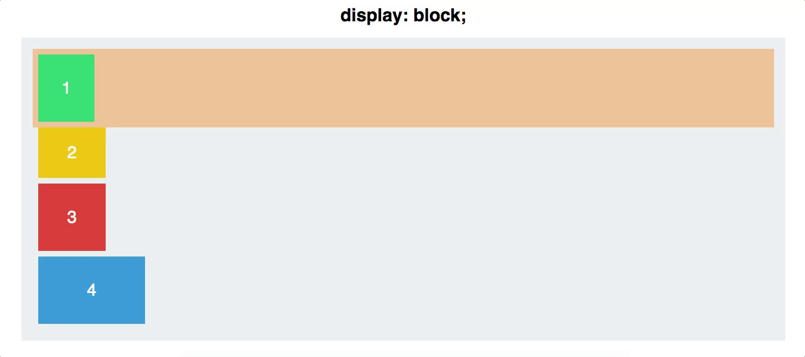
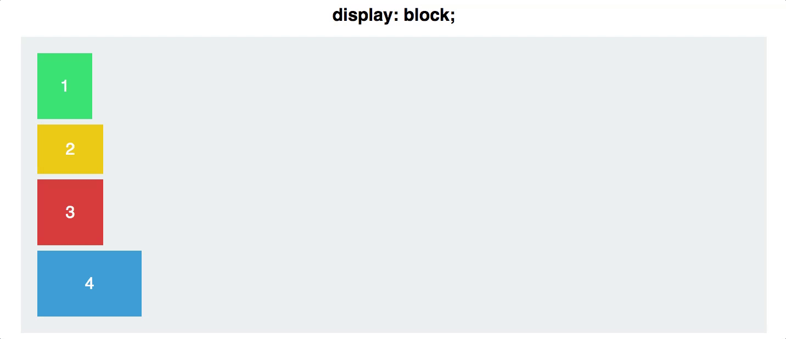
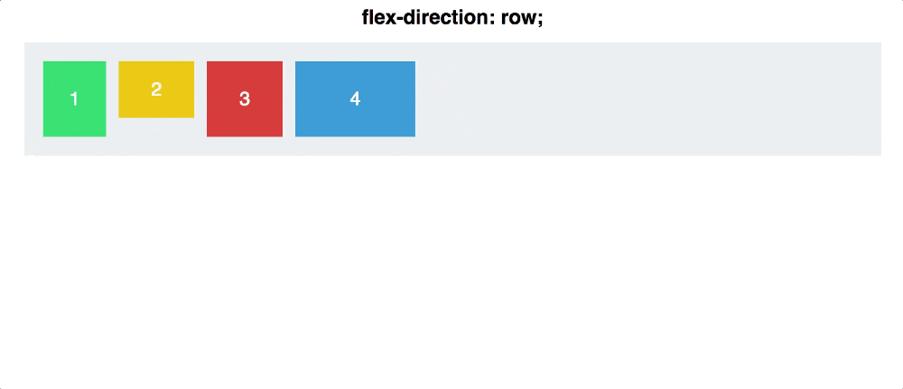

.png)


FlexBox визуализация через GIF
Давайте посмотрим, как работает Flexbox, чтобы мы могли использовать его для создания лучших макетов. Основной принцип Flexbox — сделать макеты гибкими и интуитивно понятными. Для этого контейнеры сами решают, как равномерно распределить их дочерние элементы, включая их размер и расстояние между ними.
В этой главе мы рассмотрим 5 самых распространенных свойств Flexbox. Мы рассмотрим, что они делают, как вы можете их использовать и как будут выглядеть их результаты.
Свойство № 1: Display: Flex

У вас есть четыре цветных элемента разных размеров, содержащихся в сером элементе контейнера. На данный момент каждый
Чтобы начать работу с Flexbox, вам нужно превратить ваш контейнер в гибкий контейнер . Это так же просто, как:
#container {
display: flex;
}

Немногое изменилось — ваши
Теперь вы можете начать размещать их в этом контексте, с гораздо меньшими трудностями, чем традиционный CSS.
Свойство №2: Flex Direction
У Flexbox контейнера есть две оси: основная ось и пересекающая ось, которые по умолчанию выглядят следующим образом:

По умолчанию элементы располагаются вдоль основной оси, слева направо. Вот почему ваши прямоугольники по умолчанию выстроились по горизонтальной линии после того как вы применили свойство
#container {
display: flex;
flex-direction: column;
}

Есть одно важное различие, которое следует здесь упомянуть:
Свойство №3: Justify Content
#container {
display: flex;
flex-direction: row;
justify-content: flex-start;
}
В вашем распоряжении есть пять команд для использования их в
- flex-start
- flex-end
- center
- space-between
- space-around
Свойство №4: Align Items
Если вы освоили
Давайте сбросим наш
- flex-start
- flex-end
- center
- stretch
- baseline
Первые три работают точно также как и в
(Обратите внимание что для
Для того чтобы лучше продемонстрировать основную и пересекающую оси, давайте совместим свойства
С
Свойство №5: Align Self
Align-self позволяет вам вручную управлять выравниванием одного конкретного элемента.
В основном, он переопределяет свойство
#container {
align-items: flex-start;
}
.square#one {
align-self: center;
}
// Only this square will be centered.
Давайте посмотрим на то как это выглядит. Применим
Заключение
Несмотря на то, что мы только поцарапали поверхность Flexbox, этих команд должно быть достаточно для обработки большинства основных выравниваний и вертикального расположения элементов вашего содержимого.